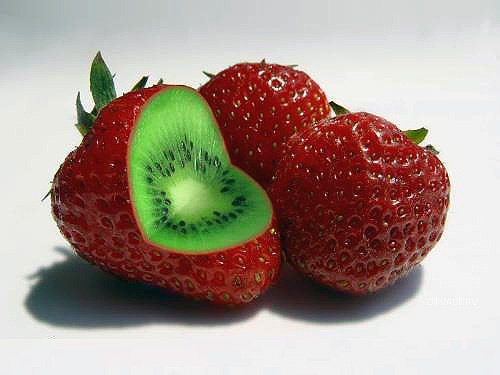
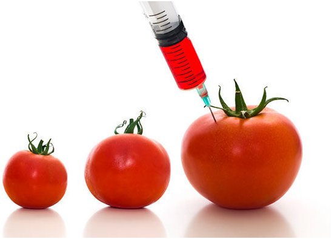

Ventajas y Desventajas
Ventajas
Entre las principales ventajas de la biotecnología se tienen:
- Rendimiento superior. Mediante organismos genéticamente modificados(OGM), el rendimiento de los cultivos aumenta, dando más alimento por menos recursos,
disminuyendo las cosechas perdidas por enfermedad o plagas así como por factores ambientales.
- educción de plaguicidas. Cada vez que un OGM es modificado para resistir una determinada plaga se está contribuyendo a reducir el uso de los
plaguicidas asociados a la misma que suelen ser causantes de grandes daños ambientales y a la salud.
- Mejora en la nutrición. Se puede llegar a introducir vitaminas? y proteínas adicionales en alimentos así como reducir los alérgenos y toxinas naturales.
También se puede intentar cultivar en condiciones extremas lo que auxiliaría a los países que tienen menos disposición de alimentos.
- Mejora en el desarrollo de nuevos materiales.
Desventajas
Los procesos de modernización agrícola, además del aumento de la producción y los rendimientos, tienen otras consecuencias.
- Una de ellas es la disminución de la mano de obra empleada por efectos de la mecanización; esto genera desempleo y éxodo rural en muchas áreas.
- Por otro lado, para aprovechar las nuevas tecnologías se requieren dinero y acceso a la tierra y al agua. Los agricultores pobres que no pueden
acceder a esos recursos quedan fuera de la modernización y en peores condiciones para competir con las producciones modernas.

